Contents
- Rate Detailed Summary
- Normalized Charge Rate Plot
- Final Charge Rates for Every Replicate
- Final Discharge Capacity for Every Replicate
- Average Normalized Charge Rate at Square Root of Every Scan Rate
- Final Charge Rates (average)
- Charge Efficiency at Every Scan Rate for Every Replicate
- Charge Efficiency at Final Scan Rate for Every Replicate
- Normalized Charge Efficiency
- Average Normalized Charge Efficiency at the Highest Scan Rate
- Normalized Discharge Rate
- Final Discharge Rates for Every Replicate
- Average Normalized Discharge Rate at Square Root of Every Scan Rate
- Final Discharge Rates (average)
- Polarization Analysis
- Polarization Values at Scan Rate 0.1 mV/s for Every Replicate
- Polarization values at scan rate 0.1 mV/s (average)
- Overlay Charge Plots
- 2. CA
- OCV Plots
- OCV Average Plot
Rate Detailed Summary
This document contains the Carbon-Lignen Phase 2 summary graphs and data analysis.
Normalized Charge Rate Plot
This will be a single graph with 8 lines. Each line will consist of 6 points
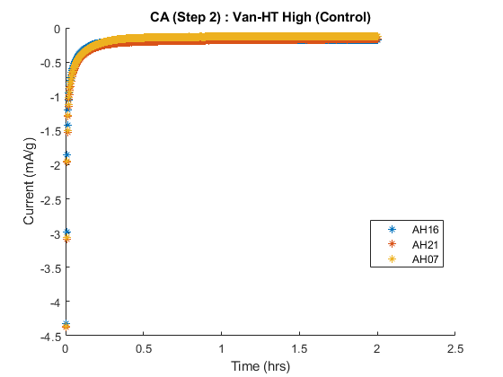Final Charge Rates for Every Replicate
Final Charge Rate for Every Replicate Replicate 1 (AH16) of Formula Van-HT High (Control) at 0.5 mV/s: -3.651570 Replicate 2 (AH21) of Formula Van-HT High (Control) at 0.5 mV/s: -3.622647 Replicate 3 (AH07) of Formula Van-HT High (Control) at 0.5 mV/s: -3.826122 Replicate 1 (AL13) of Formula Van-HT Low at 0.5 mV/s: -4.618417 Replicate 2 (AL07) of Formula Van-HT Low at 0.5 mV/s: -4.532835 Replicate 3 (AL14) of Formula Van-HT Low at 0.5 mV/s: -4.521673 Replicate 1 (BH09) of Formula Van-A High at 0.5 mV/s: -3.424341 Replicate 2 (BH16) of Formula Van-A High at 0.5 mV/s: -3.411813 Replicate 3 (BH08) of Formula Van-A High at 0.5 mV/s: -3.130816 Replicate 1 (BL15) of Formula Van-A Low at 0.5 mV/s: -4.187465 Replicate 2 (BL04) of Formula Van-A Low at 0.5 mV/s: -4.300340 Replicate 3 (BL02) of Formula Van-A Low at 0.5 mV/s: -4.194124 Replicate 1 (CH10) of Formula Van-DCA High at 0.5 mV/s: -3.285850 Replicate 2 (CH24) of Formula Van-DCA High at 0.5 mV/s: -3.792050 Replicate 3 (CH22) of Formula Van-DCA High at 0.5 mV/s: -3.903330 Replicate 1 (CL06) of Formula Van-DCA Low at 0.5 mV/s: -4.338272 Replicate 2 (CL02) of Formula Van-DCA Low at 0.5 mV/s: -4.279076 Replicate 3 (CL03) of Formula Van-DCA Low at 0.5 mV/s: -4.318249 Replicate 1 (DH03) of Formula Van-A + Indulin High at 0.5 mV/s: -3.224973 Replicate 2 (DH21) of Formula Van-A + Indulin High at 0.5 mV/s: -3.181244 Replicate 3 (DH13) of Formula Van-A + Indulin High at 0.5 mV/s: -3.451558 Replicate 1 (DL18) of Formula Van-A + Indulin Low at 0.5 mV/s: -4.246132 Replicate 2 (DL03) of Formula Van-A + Indulin Low at 0.5 mV/s: -4.149733 Replicate 3 (DL02) of Formula Van-A + Indulin Low at 0.5 mV/s: -4.291758 Replicate 1 (EH23) of Formula S-Drill CL High at 0.5 mV/s: -4.122243 Replicate 2 (EH03) of Formula S-Drill CL High at 0.5 mV/s: -3.560099 Replicate 3 (EH20) of Formula S-Drill CL High at 0.5 mV/s: -3.618738 Replicate 1 (EL22) of Formula S-Drill CL Low at 0.5 mV/s: -4.136566 Replicate 2 (EL23) of Formula S-Drill CL Low at 0.5 mV/s: -4.475359 Replicate 3 (EL08) of Formula S-Drill CL Low at 0.5 mV/s: -4.463978 Replicate 1 (FH20) of Formula Indulin AT High at 0.5 mV/s: -3.025641 Replicate 2 (FH07) of Formula Indulin AT High at 0.5 mV/s: -6.747463 Replicate 3 (FH16) of Formula Indulin AT High at 0.5 mV/s: -3.221271 Replicate 1 (FL01) of Formula Indulin AT Low at 0.5 mV/s: -4.498993 Replicate 2 (FL25) of Formula Indulin AT Low at 0.5 mV/s: -4.246356 Replicate 3 (FL03) of Formula Indulin AT Low at 0.5 mV/s: -4.151695 -3.651570 -3.622647 -3.826122 -4.618417 -4.532835 -4.521673 -3.424341 -3.411813 -3.130816 -4.187465 -4.300340 -4.194124 -3.285850 -3.792050 -3.903330 -4.338272 -4.279076 -4.318249 -3.224973 -3.181244 -3.451558 -4.246132 -4.149733 -4.291758 -4.122243 -3.560099 -3.618738 -4.136566 -4.475359 -4.463978 -3.025641 -6.747463 -3.221271 -4.498993 -4.246356 -4.151695
Final Discharge Capacity for Every Replicate
Final Discharge Capacity for Every Replicate Replicate 1 (AH16) of Formula Van-HT High (Control) at 0.50 mV/s: 74.758971 Replicate 2 (AH21) of Formula Van-HT High (Control) at 0.50 mV/s: 76.278143 Replicate 3 (AH07) of Formula Van-HT High (Control) at 0.50 mV/s: 59.282396 Replicate 1 (AL13) of Formula Van-HT Low at 0.50 mV/s: 66.142584 Replicate 2 (AL07) of Formula Van-HT Low at 0.50 mV/s: 68.460161 Replicate 3 (AL14) of Formula Van-HT Low at 0.50 mV/s: 65.779649 Replicate 1 (BH09) of Formula Van-A High at 0.50 mV/s: 84.559278 Replicate 2 (BH16) of Formula Van-A High at 0.50 mV/s: 84.200747 Replicate 3 (BH08) of Formula Van-A High at 0.50 mV/s: 91.732940 Replicate 1 (BL15) of Formula Van-A Low at 0.50 mV/s: 78.617812 Replicate 2 (BL04) of Formula Van-A Low at 0.50 mV/s: 77.141952 Replicate 3 (BL02) of Formula Van-A Low at 0.50 mV/s: 75.948768 Replicate 1 (CH10) of Formula Van-DCA High at 0.50 mV/s: 106.431193 Replicate 2 (CH24) of Formula Van-DCA High at 0.50 mV/s: 76.564316 Replicate 3 (CH22) of Formula Van-DCA High at 0.50 mV/s: 69.749563 Replicate 1 (CL06) of Formula Van-DCA Low at 0.50 mV/s: 79.088273 Replicate 2 (CL02) of Formula Van-DCA Low at 0.50 mV/s: 77.630731 Replicate 3 (CL03) of Formula Van-DCA Low at 0.50 mV/s: 75.778453 Replicate 1 (DH03) of Formula Van-A + Indulin High at 0.50 mV/s: 86.147328 Replicate 2 (DH21) of Formula Van-A + Indulin High at 0.50 mV/s: 86.443163 Replicate 3 (DH13) of Formula Van-A + Indulin High at 0.50 mV/s: 76.185241 Replicate 1 (DL18) of Formula Van-A + Indulin Low at 0.50 mV/s: 71.600622 Replicate 2 (DL03) of Formula Van-A + Indulin Low at 0.50 mV/s: 81.616414 Replicate 3 (DL02) of Formula Van-A + Indulin Low at 0.50 mV/s: 79.744592 Replicate 1 (EH23) of Formula S-Drill CL High at 0.50 mV/s: 67.145208 Replicate 2 (EH03) of Formula S-Drill CL High at 0.50 mV/s: 82.260903 Replicate 3 (EH20) of Formula S-Drill CL High at 0.50 mV/s: 89.646928 Replicate 1 (EL22) of Formula S-Drill CL Low at 0.50 mV/s: 86.326115 Replicate 2 (EL23) of Formula S-Drill CL Low at 0.50 mV/s: 69.237464 Replicate 3 (EL08) of Formula S-Drill CL Low at 0.50 mV/s: 73.141434 Replicate 1 (FH20) of Formula Indulin AT High at 0.50 mV/s: 90.774650 Replicate 2 (FH07) of Formula Indulin AT High at 0.50 mV/s: 88.445501 Replicate 3 (FH16) of Formula Indulin AT High at 0.50 mV/s: 85.270940 Replicate 1 (FL01) of Formula Indulin AT Low at 0.50 mV/s: 66.320333 Replicate 2 (FL25) of Formula Indulin AT Low at 0.50 mV/s: 70.595109 Replicate 3 (FL03) of Formula Indulin AT Low at 0.50 mV/s: 79.277204 74.758971 76.278143 59.282396 66.142584 68.460161 65.779649 84.559278 84.200747 91.732940 78.617812 77.141952 75.948768 106.431193 76.564316 69.749563 79.088273 77.630731 75.778453 86.147328 86.443163 76.185241 71.600622 81.616414 79.744592 67.145208 82.260903 89.646928 86.326115 69.237464 73.141434 90.774650 88.445501 85.270940 66.320333 70.595109 79.277204
Average Normalized Charge Rate at Square Root of Every Scan Rate
Print the average A/Ah values
Formula Van-HT High (Control) at square root of scan rate 0.010000 (0.1000): -0.518353 Formula Van-HT High (Control) at square root of scan rate 0.020000 (0.1414): -0.716197 Formula Van-HT High (Control) at square root of scan rate 0.050000 (0.2236): -1.082052 Formula Van-HT High (Control) at square root of scan rate 0.100000 (0.3162): -1.537749 Formula Van-HT High (Control) at square root of scan rate 0.200000 (0.4472): -2.297907 Formula Van-HT High (Control) at square root of scan rate 0.500000 (0.7071): -3.700113 Formula Van-HT Low at square root of scan rate 0.010000 (0.1000): -0.614450 Formula Van-HT Low at square root of scan rate 0.020000 (0.1414): -0.901571 Formula Van-HT Low at square root of scan rate 0.050000 (0.2236): -1.380318 Formula Van-HT Low at square root of scan rate 0.100000 (0.3162): -1.940172 Formula Van-HT Low at square root of scan rate 0.200000 (0.4472): -2.842915 Formula Van-HT Low at square root of scan rate 0.500000 (0.7071): -4.557641 Formula Van-A High at square root of scan rate 0.010000 (0.1000): -0.470353 Formula Van-A High at square root of scan rate 0.020000 (0.1414): -0.638305 Formula Van-A High at square root of scan rate 0.050000 (0.2236): -0.963418 Formula Van-A High at square root of scan rate 0.100000 (0.3162): -1.407521 Formula Van-A High at square root of scan rate 0.200000 (0.4472): -2.099465 Formula Van-A High at square root of scan rate 0.500000 (0.7071): -3.322323 Formula Van-A Low at square root of scan rate 0.010000 (0.1000): -0.556208 Formula Van-A Low at square root of scan rate 0.020000 (0.1414): -0.797534 Formula Van-A Low at square root of scan rate 0.050000 (0.2236): -1.220689 Formula Van-A Low at square root of scan rate 0.100000 (0.3162): -1.745473 Formula Van-A Low at square root of scan rate 0.200000 (0.4472): -2.613590 Formula Van-A Low at square root of scan rate 0.500000 (0.7071): -4.227310 Formula Van-DCA High at square root of scan rate 0.010000 (0.1000): -0.488345 Formula Van-DCA High at square root of scan rate 0.020000 (0.1414): -0.699764 Formula Van-DCA High at square root of scan rate 0.050000 (0.2236): -1.073518 Formula Van-DCA High at square root of scan rate 0.100000 (0.3162): -1.531536 Formula Van-DCA High at square root of scan rate 0.200000 (0.4472): -2.282124 Formula Van-DCA High at square root of scan rate 0.500000 (0.7071): -3.660410 Formula Van-DCA Low at square root of scan rate 0.010000 (0.1000): -0.617460 Formula Van-DCA Low at square root of scan rate 0.020000 (0.1414): -0.897116 Formula Van-DCA Low at square root of scan rate 0.050000 (0.2236): -1.374355 Formula Van-DCA Low at square root of scan rate 0.100000 (0.3162): -1.897557 Formula Van-DCA Low at square root of scan rate 0.200000 (0.4472): -2.726560 Formula Van-DCA Low at square root of scan rate 0.500000 (0.7071): -4.311866 Formula Van-A + Indulin High at square root of scan rate 0.010000 (0.1000): -0.453663 Formula Van-A + Indulin High at square root of scan rate 0.020000 (0.1414): -0.618471 Formula Van-A + Indulin High at square root of scan rate 0.050000 (0.2236): -0.951391 Formula Van-A + Indulin High at square root of scan rate 0.100000 (0.3162): -1.377310 Formula Van-A + Indulin High at square root of scan rate 0.200000 (0.4472): -2.082652 Formula Van-A + Indulin High at square root of scan rate 0.500000 (0.7071): -3.285925 Formula Van-A + Indulin Low at square root of scan rate 0.010000 (0.1000): -0.586586 Formula Van-A + Indulin Low at square root of scan rate 0.020000 (0.1414): -0.834869 Formula Van-A + Indulin Low at square root of scan rate 0.050000 (0.2236): -1.280018 Formula Van-A + Indulin Low at square root of scan rate 0.100000 (0.3162): -1.797338 Formula Van-A + Indulin Low at square root of scan rate 0.200000 (0.4472): -2.637534 Formula Van-A + Indulin Low at square root of scan rate 0.500000 (0.7071): -4.229207 Formula S-Drill CL High at square root of scan rate 0.010000 (0.1000): -0.519032 Formula S-Drill CL High at square root of scan rate 0.020000 (0.1414): -0.747944 Formula S-Drill CL High at square root of scan rate 0.050000 (0.2236): -1.153206 Formula S-Drill CL High at square root of scan rate 0.100000 (0.3162): -1.647159 Formula S-Drill CL High at square root of scan rate 0.200000 (0.4472): -2.416168 Formula S-Drill CL High at square root of scan rate 0.500000 (0.7071): -3.767027 Formula S-Drill CL Low at square root of scan rate 0.010000 (0.1000): -0.611655 Formula S-Drill CL Low at square root of scan rate 0.020000 (0.1414): -0.888317 Formula S-Drill CL Low at square root of scan rate 0.050000 (0.2236): -1.365317 Formula S-Drill CL Low at square root of scan rate 0.100000 (0.3162): -1.916710 Formula S-Drill CL Low at square root of scan rate 0.200000 (0.4472): -2.766021 Formula S-Drill CL Low at square root of scan rate 0.500000 (0.7071): -4.358634 Formula Indulin AT High at square root of scan rate 0.010000 (0.1000): -0.409803 Formula Indulin AT High at square root of scan rate 0.020000 (0.1414): -0.584239 Formula Indulin AT High at square root of scan rate 0.050000 (0.2236): -0.913512 Formula Indulin AT High at square root of scan rate 0.100000 (0.3162): -1.329984 Formula Indulin AT High at square root of scan rate 0.200000 (0.4472): -2.311107 Formula Indulin AT High at square root of scan rate 0.500000 (0.7071): -4.331458 Formula Indulin AT Low at square root of scan rate 0.010000 (0.1000): -0.590997 Formula Indulin AT Low at square root of scan rate 0.020000 (0.1414): -0.847982 Formula Indulin AT Low at square root of scan rate 0.050000 (0.2236): -1.306715 Formula Indulin AT Low at square root of scan rate 0.100000 (0.3162): -1.837011 Formula Indulin AT Low at square root of scan rate 0.200000 (0.4472): -2.683679 Formula Indulin AT Low at square root of scan rate 0.500000 (0.7071): -4.299014
Final Charge Rates (average)
Charge rate at 0.5 mV/s of formula Van-HT High (Control): -3.700113 Charge rate at 0.5 mV/s of formula Van-HT Low: -4.557641 Charge rate at 0.5 mV/s of formula Van-A High: -3.322323 Charge rate at 0.5 mV/s of formula Van-A Low: -4.227310 Charge rate at 0.5 mV/s of formula Van-DCA High: -3.660410 Charge rate at 0.5 mV/s of formula Van-DCA Low: -4.311866 Charge rate at 0.5 mV/s of formula Van-A + Indulin High: -3.285925 Charge rate at 0.5 mV/s of formula Van-A + Indulin Low: -4.229207 Charge rate at 0.5 mV/s of formula S-Drill CL High: -3.767027 Charge rate at 0.5 mV/s of formula S-Drill CL Low: -4.358634 Charge rate at 0.5 mV/s of formula Indulin AT High: -4.331458 Charge rate at 0.5 mV/s of formula Indulin AT Low: -4.299014 -3.700113 -4.557641 -3.322323 -4.227310 -3.660410 -4.311866 -3.285925 -4.229207 -3.767027 -4.358634 -4.331458 -4.299014
Charge Efficiency at Every Scan Rate for Every Replicate
Take the integral of every interval
Integral of interval 1 of Replicate 1 of Formula Van-HT High (Control): -79.313677 Integral of interval 2 of Replicate 1 of Formula Van-HT High (Control): -75.875152 Integral of interval 3 of Replicate 1 of Formula Van-HT High (Control): -76.769001 Integral of interval 4 of Replicate 1 of Formula Van-HT High (Control): -69.595419 Integral of interval 5 of Replicate 1 of Formula Van-HT High (Control): -61.098365 Integral of interval 6 of Replicate 1 of Formula Van-HT High (Control): -48.127329 Integral of interval 1 of Replicate 2 of Formula Van-HT High (Control): -76.593320 Integral of interval 2 of Replicate 2 of Formula Van-HT High (Control): -74.795716 Integral of interval 3 of Replicate 2 of Formula Van-HT High (Control): -76.484396 Integral of interval 4 of Replicate 2 of Formula Van-HT High (Control): -71.592511 Integral of interval 5 of Replicate 2 of Formula Van-HT High (Control): -62.155038 Integral of interval 6 of Replicate 2 of Formula Van-HT High (Control): -48.637170 Integral of interval 1 of Replicate 3 of Formula Van-HT High (Control): -57.993796 Integral of interval 2 of Replicate 3 of Formula Van-HT High (Control): -56.009654 Integral of interval 3 of Replicate 3 of Formula Van-HT High (Control): -57.956774 Integral of interval 4 of Replicate 3 of Formula Van-HT High (Control): -56.246684 Integral of interval 5 of Replicate 3 of Formula Van-HT High (Control): -49.877857 Integral of interval 6 of Replicate 3 of Formula Van-HT High (Control): -39.628722 Integral of interval 1 of Replicate 1 of Formula Van-HT Low: -77.779886 Integral of interval 2 of Replicate 1 of Formula Van-HT Low: -68.694731 Integral of interval 3 of Replicate 1 of Formula Van-HT Low: -68.448702 Integral of interval 4 of Replicate 1 of Formula Van-HT Low: -65.693913 Integral of interval 5 of Replicate 1 of Formula Van-HT Low: -60.097550 Integral of interval 6 of Replicate 1 of Formula Van-HT Low: -48.619097 Integral of interval 1 of Replicate 2 of Formula Van-HT Low: -79.950684 Integral of interval 2 of Replicate 2 of Formula Van-HT Low: -72.380938 Integral of interval 3 of Replicate 2 of Formula Van-HT Low: -71.393131 Integral of interval 4 of Replicate 2 of Formula Van-HT Low: -69.141820 Integral of interval 5 of Replicate 2 of Formula Van-HT Low: -62.895764 Integral of interval 6 of Replicate 2 of Formula Van-HT Low: -49.761969 Integral of interval 1 of Replicate 3 of Formula Van-HT Low: -76.425579 Integral of interval 2 of Replicate 3 of Formula Van-HT Low: -67.998856 Integral of interval 3 of Replicate 3 of Formula Van-HT Low: -67.381885 Integral of interval 4 of Replicate 3 of Formula Van-HT Low: -65.320058 Integral of interval 5 of Replicate 3 of Formula Van-HT Low: -59.395947 Integral of interval 6 of Replicate 3 of Formula Van-HT Low: -47.666564 Integral of interval 1 of Replicate 1 of Formula Van-A High: -85.111800 Integral of interval 2 of Replicate 1 of Formula Van-A High: -81.281683 Integral of interval 3 of Replicate 1 of Formula Van-A High: -86.056902 Integral of interval 4 of Replicate 1 of Formula Van-A High: -73.979595 Integral of interval 5 of Replicate 1 of Formula Van-A High: -71.189958 Integral of interval 6 of Replicate 1 of Formula Van-A High: -51.722405 Integral of interval 1 of Replicate 2 of Formula Van-A High: -85.059255 Integral of interval 2 of Replicate 2 of Formula Van-A High: -85.409764 Integral of interval 3 of Replicate 2 of Formula Van-A High: -86.693812 Integral of interval 4 of Replicate 2 of Formula Van-A High: -81.713946 Integral of interval 5 of Replicate 2 of Formula Van-A High: -70.859304 Integral of interval 6 of Replicate 2 of Formula Van-A High: -52.031881 Integral of interval 1 of Replicate 3 of Formula Van-A High: -92.253445 Integral of interval 2 of Replicate 3 of Formula Van-A High: -91.991164 Integral of interval 3 of Replicate 3 of Formula Van-A High: -93.173210 Integral of interval 4 of Replicate 3 of Formula Van-A High: -83.366192 Integral of interval 5 of Replicate 3 of Formula Van-A High: -70.969562 Integral of interval 6 of Replicate 3 of Formula Van-A High: -52.154749 Integral of interval 1 of Replicate 1 of Formula Van-A Low: -86.297064 Integral of interval 2 of Replicate 1 of Formula Van-A Low: -79.843313 Integral of interval 3 of Replicate 1 of Formula Van-A Low: -80.361331 Integral of interval 4 of Replicate 1 of Formula Van-A Low: -76.886094 Integral of interval 5 of Replicate 1 of Formula Van-A Low: -70.533860 Integral of interval 6 of Replicate 1 of Formula Van-A Low: -55.437893 Integral of interval 1 of Replicate 2 of Formula Van-A Low: -85.648792 Integral of interval 2 of Replicate 2 of Formula Van-A Low: -80.886049 Integral of interval 3 of Replicate 2 of Formula Van-A Low: -80.073533 Integral of interval 4 of Replicate 2 of Formula Van-A Low: -77.874903 Integral of interval 5 of Replicate 2 of Formula Van-A Low: -70.529334 Integral of interval 6 of Replicate 2 of Formula Van-A Low: -55.620914 Integral of interval 1 of Replicate 3 of Formula Van-A Low: -90.050629 Integral of interval 2 of Replicate 3 of Formula Van-A Low: -79.804607 Integral of interval 3 of Replicate 3 of Formula Van-A Low: -79.138729 Integral of interval 4 of Replicate 3 of Formula Van-A Low: -76.246415 Integral of interval 5 of Replicate 3 of Formula Van-A Low: -68.776337 Integral of interval 6 of Replicate 3 of Formula Van-A Low: -53.948838 Integral of interval 1 of Replicate 1 of Formula Van-DCA High: -101.634388 Integral of interval 2 of Replicate 1 of Formula Van-DCA High: -99.744089 Integral of interval 3 of Replicate 1 of Formula Van-DCA High: -103.181525 Integral of interval 4 of Replicate 1 of Formula Van-DCA High: -93.300219 Integral of interval 5 of Replicate 1 of Formula Van-DCA High: -80.476427 Integral of interval 6 of Replicate 1 of Formula Van-DCA High: -62.795032 Integral of interval 1 of Replicate 2 of Formula Van-DCA High: -86.736183 Integral of interval 2 of Replicate 2 of Formula Van-DCA High: -82.315466 Integral of interval 3 of Replicate 2 of Formula Van-DCA High: -84.643819 Integral of interval 4 of Replicate 2 of Formula Van-DCA High: -79.134158 Integral of interval 5 of Replicate 2 of Formula Van-DCA High: -68.450763 Integral of interval 6 of Replicate 2 of Formula Van-DCA High: -52.386634 Integral of interval 1 of Replicate 3 of Formula Van-DCA High: -73.262090 Integral of interval 2 of Replicate 3 of Formula Van-DCA High: -69.631327 Integral of interval 3 of Replicate 3 of Formula Van-DCA High: -71.846301 Integral of interval 4 of Replicate 3 of Formula Van-DCA High: -69.796073 Integral of interval 5 of Replicate 3 of Formula Van-DCA High: -61.705113 Integral of interval 6 of Replicate 3 of Formula Van-DCA High: -48.350735 Integral of interval 1 of Replicate 1 of Formula Van-DCA Low: -89.293253 Integral of interval 2 of Replicate 1 of Formula Van-DCA Low: -80.530685 Integral of interval 3 of Replicate 1 of Formula Van-DCA Low: -80.917349 Integral of interval 4 of Replicate 1 of Formula Van-DCA Low: -76.552789 Integral of interval 5 of Replicate 1 of Formula Van-DCA Low: -68.377797 Integral of interval 6 of Replicate 1 of Formula Van-DCA Low: -53.514454 Integral of interval 1 of Replicate 2 of Formula Van-DCA Low: -88.914491 Integral of interval 2 of Replicate 2 of Formula Van-DCA Low: -79.021334 Integral of interval 3 of Replicate 2 of Formula Van-DCA Low: -78.894323 Integral of interval 4 of Replicate 2 of Formula Van-DCA Low: -77.444786 Integral of interval 5 of Replicate 2 of Formula Van-DCA Low: -68.707855 Integral of interval 6 of Replicate 2 of Formula Van-DCA Low: -53.462406 Integral of interval 1 of Replicate 3 of Formula Van-DCA Low: -88.848370 Integral of interval 2 of Replicate 3 of Formula Van-DCA Low: -77.067079 Integral of interval 3 of Replicate 3 of Formula Van-DCA Low: -76.507151 Integral of interval 4 of Replicate 3 of Formula Van-DCA Low: -74.071881 Integral of interval 5 of Replicate 3 of Formula Van-DCA Low: -66.471621 Integral of interval 6 of Replicate 3 of Formula Van-DCA Low: -52.594785 Integral of interval 1 of Replicate 1 of Formula Van-A + Indulin High: -89.621780 Integral of interval 2 of Replicate 1 of Formula Van-A + Indulin High: -85.978950 Integral of interval 3 of Replicate 1 of Formula Van-A + Indulin High: -87.336906 Integral of interval 4 of Replicate 1 of Formula Van-A + Indulin High: -81.229537 Integral of interval 5 of Replicate 1 of Formula Van-A + Indulin High: -70.405127 Integral of interval 6 of Replicate 1 of Formula Van-A + Indulin High: -50.462159 Integral of interval 1 of Replicate 2 of Formula Van-A + Indulin High: -89.798925 Integral of interval 2 of Replicate 2 of Formula Van-A + Indulin High: -86.203056 Integral of interval 3 of Replicate 2 of Formula Van-A + Indulin High: -88.495427 Integral of interval 4 of Replicate 2 of Formula Van-A + Indulin High: -83.932183 Integral of interval 5 of Replicate 2 of Formula Van-A + Indulin High: -71.943553 Integral of interval 6 of Replicate 2 of Formula Van-A + Indulin High: -50.307089 Integral of interval 1 of Replicate 3 of Formula Van-A + Indulin High: -81.884216 Integral of interval 2 of Replicate 3 of Formula Van-A + Indulin High: -77.053055 Integral of interval 3 of Replicate 3 of Formula Van-A + Indulin High: -77.570646 Integral of interval 4 of Replicate 3 of Formula Van-A + Indulin High: -73.113326 Integral of interval 5 of Replicate 3 of Formula Van-A + Indulin High: -65.004251 Integral of interval 6 of Replicate 3 of Formula Van-A + Indulin High: -47.551721 Integral of interval 1 of Replicate 1 of Formula Van-A + Indulin Low: -78.978707 Integral of interval 2 of Replicate 1 of Formula Van-A + Indulin Low: -71.100588 Integral of interval 3 of Replicate 1 of Formula Van-A + Indulin Low: -71.891524 Integral of interval 4 of Replicate 1 of Formula Van-A + Indulin Low: -69.331364 Integral of interval 5 of Replicate 1 of Formula Van-A + Indulin Low: -64.028697 Integral of interval 6 of Replicate 1 of Formula Van-A + Indulin Low: -50.081954 Integral of interval 1 of Replicate 2 of Formula Van-A + Indulin Low: -90.253058 Integral of interval 2 of Replicate 2 of Formula Van-A + Indulin Low: -81.864143 Integral of interval 3 of Replicate 2 of Formula Van-A + Indulin Low: -81.744358 Integral of interval 4 of Replicate 2 of Formula Van-A + Indulin Low: -79.874796 Integral of interval 5 of Replicate 2 of Formula Van-A + Indulin Low: -72.638011 Integral of interval 6 of Replicate 2 of Formula Van-A + Indulin Low: -56.712810 Integral of interval 1 of Replicate 3 of Formula Van-A + Indulin Low: -91.135431 Integral of interval 2 of Replicate 3 of Formula Van-A + Indulin Low: -81.220260 Integral of interval 3 of Replicate 3 of Formula Van-A + Indulin Low: -80.819213 Integral of interval 4 of Replicate 3 of Formula Van-A + Indulin Low: -78.534757 Integral of interval 5 of Replicate 3 of Formula Van-A + Indulin Low: -71.028331 Integral of interval 6 of Replicate 3 of Formula Van-A + Indulin Low: -56.340135 Integral of interval 1 of Replicate 1 of Formula S-Drill CL High: -67.795792 Integral of interval 2 of Replicate 1 of Formula S-Drill CL High: -64.884653 Integral of interval 3 of Replicate 1 of Formula S-Drill CL High: -66.259195 Integral of interval 4 of Replicate 1 of Formula S-Drill CL High: -65.179832 Integral of interval 5 of Replicate 1 of Formula S-Drill CL High: -59.615592 Integral of interval 6 of Replicate 1 of Formula S-Drill CL High: -46.210454 Integral of interval 1 of Replicate 2 of Formula S-Drill CL High: -112.095679 Integral of interval 2 of Replicate 2 of Formula S-Drill CL High: -82.154109 Integral of interval 3 of Replicate 2 of Formula S-Drill CL High: -83.986330 Integral of interval 4 of Replicate 2 of Formula S-Drill CL High: -79.795400 Integral of interval 5 of Replicate 2 of Formula S-Drill CL High: -68.999506 Integral of interval 6 of Replicate 2 of Formula S-Drill CL High: -51.708734 Integral of interval 1 of Replicate 3 of Formula S-Drill CL High: -108.694027 Integral of interval 2 of Replicate 3 of Formula S-Drill CL High: -88.352139 Integral of interval 3 of Replicate 3 of Formula S-Drill CL High: -90.614489 Integral of interval 4 of Replicate 3 of Formula S-Drill CL High: -85.904639 Integral of interval 5 of Replicate 3 of Formula S-Drill CL High: -76.370114 Integral of interval 6 of Replicate 3 of Formula S-Drill CL High: -56.419640 Integral of interval 1 of Replicate 1 of Formula S-Drill CL Low: -92.247056 Integral of interval 2 of Replicate 1 of Formula S-Drill CL Low: -85.806777 Integral of interval 3 of Replicate 1 of Formula S-Drill CL Low: -85.961814 Integral of interval 4 of Replicate 1 of Formula S-Drill CL Low: -83.687710 Integral of interval 5 of Replicate 1 of Formula S-Drill CL Low: -74.624077 Integral of interval 6 of Replicate 1 of Formula S-Drill CL Low: -58.812876 Integral of interval 1 of Replicate 2 of Formula S-Drill CL Low: -79.684812 Integral of interval 2 of Replicate 2 of Formula S-Drill CL Low: -70.660789 Integral of interval 3 of Replicate 2 of Formula S-Drill CL Low: -69.977433 Integral of interval 4 of Replicate 2 of Formula S-Drill CL Low: -68.985932 Integral of interval 5 of Replicate 2 of Formula S-Drill CL Low: -63.160232 Integral of interval 6 of Replicate 2 of Formula S-Drill CL Low: -49.733232 Integral of interval 1 of Replicate 3 of Formula S-Drill CL Low: -79.683683 Integral of interval 2 of Replicate 3 of Formula S-Drill CL Low: -72.066170 Integral of interval 3 of Replicate 3 of Formula S-Drill CL Low: -72.507412 Integral of interval 4 of Replicate 3 of Formula S-Drill CL Low: -71.476698 Integral of interval 5 of Replicate 3 of Formula S-Drill CL Low: -66.254092 Integral of interval 6 of Replicate 3 of Formula S-Drill CL Low: -52.023837 Integral of interval 1 of Replicate 1 of Formula Indulin AT High: -98.636478 Integral of interval 2 of Replicate 1 of Formula Indulin AT High: -92.872987 Integral of interval 3 of Replicate 1 of Formula Indulin AT High: -93.063926 Integral of interval 4 of Replicate 1 of Formula Indulin AT High: -85.341097 Integral of interval 5 of Replicate 1 of Formula Indulin AT High: -71.410114 Integral of interval 6 of Replicate 1 of Formula Indulin AT High: -49.384511 Integral of interval 1 of Replicate 2 of Formula Indulin AT High: -100.546478 Integral of interval 2 of Replicate 2 of Formula Indulin AT High: -84.764243 Integral of interval 3 of Replicate 2 of Formula Indulin AT High: -83.228020 Integral of interval 4 of Replicate 2 of Formula Indulin AT High: -76.936178 Integral of interval 5 of Replicate 2 of Formula Indulin AT High: -65.687586 Integral of interval 6 of Replicate 2 of Formula Indulin AT High: -45.091155 Integral of interval 1 of Replicate 3 of Formula Indulin AT High: -91.315324 Integral of interval 2 of Replicate 3 of Formula Indulin AT High: -84.206041 Integral of interval 3 of Replicate 3 of Formula Indulin AT High: -85.908488 Integral of interval 4 of Replicate 3 of Formula Indulin AT High: -81.476141 Integral of interval 5 of Replicate 3 of Formula Indulin AT High: -69.982147 Integral of interval 6 of Replicate 3 of Formula Indulin AT High: -49.038069 Integral of interval 1 of Replicate 1 of Formula Indulin AT Low: -76.604752 Integral of interval 2 of Replicate 1 of Formula Indulin AT Low: -69.658969 Integral of interval 3 of Replicate 1 of Formula Indulin AT Low: -68.422874 Integral of interval 4 of Replicate 1 of Formula Indulin AT Low: -66.456841 Integral of interval 5 of Replicate 1 of Formula Indulin AT Low: -60.334450 Integral of interval 6 of Replicate 1 of Formula Indulin AT Low: -48.275059 Integral of interval 1 of Replicate 2 of Formula Indulin AT Low: -79.435092 Integral of interval 2 of Replicate 2 of Formula Indulin AT Low: -71.540923 Integral of interval 3 of Replicate 2 of Formula Indulin AT Low: -71.393206 Integral of interval 4 of Replicate 2 of Formula Indulin AT Low: -69.830365 Integral of interval 5 of Replicate 2 of Formula Indulin AT Low: -63.234955 Integral of interval 6 of Replicate 2 of Formula Indulin AT Low: -49.619792 Integral of interval 1 of Replicate 3 of Formula Indulin AT Low: -89.730992 Integral of interval 2 of Replicate 3 of Formula Indulin AT Low: -80.258705 Integral of interval 3 of Replicate 3 of Formula Indulin AT Low: -80.275495 Integral of interval 4 of Replicate 3 of Formula Indulin AT Low: -77.795524 Integral of interval 5 of Replicate 3 of Formula Indulin AT Low: -70.303510 Integral of interval 6 of Replicate 3 of Formula Indulin AT Low: -54.536016 Charge Efficiency at Every Scan Rate Replicate 1 (AH) of Formula Van-HT High (Control) at 0.01 mV/s: 103.326291% Replicate 1 (AH) of Formula Van-HT High (Control) at 0.02 mV/s: 103.264360% Replicate 1 (AH) of Formula Van-HT High (Control) at 0.05 mV/s: 102.443895% Replicate 1 (AH) of Formula Van-HT High (Control) at 0.10 mV/s: 94.057368% Replicate 1 (AH) of Formula Van-HT High (Control) at 0.20 mV/s: 82.639838% Replicate 1 (AH) of Formula Van-HT High (Control) at 0.50 mV/s: 64.376661% Replicate 2 (AH) of Formula Van-HT High (Control) at 0.01 mV/s: 104.128561% Replicate 2 (AH) of Formula Van-HT High (Control) at 0.02 mV/s: 102.004226% Replicate 2 (AH) of Formula Van-HT High (Control) at 0.05 mV/s: 101.773275% Replicate 2 (AH) of Formula Van-HT High (Control) at 0.10 mV/s: 94.396802% Replicate 2 (AH) of Formula Van-HT High (Control) at 0.20 mV/s: 81.553097% Replicate 2 (AH) of Formula Van-HT High (Control) at 0.50 mV/s: 63.762919% Replicate 3 (AH) of Formula Van-HT High (Control) at 0.01 mV/s: 103.716966% Replicate 3 (AH) of Formula Van-HT High (Control) at 0.02 mV/s: 102.418057% Replicate 3 (AH) of Formula Van-HT High (Control) at 0.05 mV/s: 102.051430% Replicate 3 (AH) of Formula Van-HT High (Control) at 0.10 mV/s: 98.800874% Replicate 3 (AH) of Formula Van-HT High (Control) at 0.20 mV/s: 86.807075% Replicate 3 (AH) of Formula Van-HT High (Control) at 0.50 mV/s: 66.847369% Replicate 1 (AL) of Formula Van-HT Low at 0.01 mV/s: 102.803670% Replicate 1 (AL) of Formula Van-HT Low at 0.02 mV/s: 102.373153% Replicate 1 (AL) of Formula Van-HT Low at 0.05 mV/s: 102.095660% Replicate 1 (AL) of Formula Van-HT Low at 0.10 mV/s: 99.772173% Replicate 1 (AL) of Formula Van-HT Low at 0.20 mV/s: 91.424285% Replicate 1 (AL) of Formula Van-HT Low at 0.50 mV/s: 73.506498% Replicate 2 (AL) of Formula Van-HT Low at 0.01 mV/s: 102.969166% Replicate 2 (AL) of Formula Van-HT Low at 0.02 mV/s: 102.581324% Replicate 2 (AL) of Formula Van-HT Low at 0.05 mV/s: 102.746426% Replicate 2 (AL) of Formula Van-HT Low at 0.10 mV/s: 100.193689% Replicate 2 (AL) of Formula Van-HT Low at 0.20 mV/s: 91.112469% Replicate 2 (AL) of Formula Van-HT Low at 0.50 mV/s: 72.687485% Replicate 3 (AL) of Formula Van-HT Low at 0.01 mV/s: 102.974772% Replicate 3 (AL) of Formula Van-HT Low at 0.02 mV/s: 102.187882% Replicate 3 (AL) of Formula Van-HT Low at 0.05 mV/s: 102.152062% Replicate 3 (AL) of Formula Van-HT Low at 0.10 mV/s: 100.148534% Replicate 3 (AL) of Formula Van-HT Low at 0.20 mV/s: 91.209963% Replicate 3 (AL) of Formula Van-HT Low at 0.50 mV/s: 72.463999% Replicate 1 (BH) of Formula Van-A High at 0.01 mV/s: 104.844873% Replicate 1 (BH) of Formula Van-A High at 0.02 mV/s: 103.296543% Replicate 1 (BH) of Formula Van-A High at 0.05 mV/s: 102.024685% Replicate 1 (BH) of Formula Van-A High at 0.10 mV/s: 97.061825% Replicate 1 (BH) of Formula Van-A High at 0.20 mV/s: 85.453323% Replicate 1 (BH) of Formula Van-A High at 0.50 mV/s: 61.167037% Replicate 2 (BH) of Formula Van-A High at 0.01 mV/s: 103.904733% Replicate 2 (BH) of Formula Van-A High at 0.02 mV/s: 100.326717% Replicate 2 (BH) of Formula Van-A High at 0.05 mV/s: 100.287775% Replicate 2 (BH) of Formula Van-A High at 0.10 mV/s: 95.436128% Replicate 2 (BH) of Formula Van-A High at 0.20 mV/s: 83.417590% Replicate 2 (BH) of Formula Van-A High at 0.50 mV/s: 61.795034% Replicate 3 (BH) of Formula Van-A High at 0.01 mV/s: 103.518252% Replicate 3 (BH) of Formula Van-A High at 0.02 mV/s: 102.498608% Replicate 3 (BH) of Formula Van-A High at 0.05 mV/s: 101.610201% Replicate 3 (BH) of Formula Van-A High at 0.10 mV/s: 91.881816% Replicate 3 (BH) of Formula Van-A High at 0.20 mV/s: 78.160713% Replicate 3 (BH) of Formula Van-A High at 0.50 mV/s: 56.854985% Replicate 1 (BL) of Formula Van-A Low at 0.01 mV/s: 102.827048% Replicate 1 (BL) of Formula Van-A Low at 0.02 mV/s: 102.392249% Replicate 1 (BL) of Formula Van-A Low at 0.05 mV/s: 102.134079% Replicate 1 (BL) of Formula Van-A Low at 0.10 mV/s: 99.129974% Replicate 1 (BL) of Formula Van-A Low at 0.20 mV/s: 90.214418% Replicate 1 (BL) of Formula Van-A Low at 0.50 mV/s: 70.515691% Replicate 2 (BL) of Formula Van-A Low at 0.01 mV/s: 102.519719% Replicate 2 (BL) of Formula Van-A Low at 0.02 mV/s: 100.128313% Replicate 2 (BL) of Formula Van-A Low at 0.05 mV/s: 100.173085% Replicate 2 (BL) of Formula Van-A Low at 0.10 mV/s: 98.865284% Replicate 2 (BL) of Formula Van-A Low at 0.20 mV/s: 90.346017% Replicate 2 (BL) of Formula Van-A Low at 0.50 mV/s: 72.102031% Replicate 3 (BL) of Formula Van-A Low at 0.01 mV/s: 108.020943% Replicate 3 (BL) of Formula Van-A Low at 0.02 mV/s: 102.959564% Replicate 3 (BL) of Formula Van-A Low at 0.05 mV/s: 102.497799% Replicate 3 (BL) of Formula Van-A Low at 0.10 mV/s: 100.064062% Replicate 3 (BL) of Formula Van-A Low at 0.20 mV/s: 90.711673% Replicate 3 (BL) of Formula Van-A Low at 0.50 mV/s: 71.033197% Replicate 1 (CH) of Formula Van-DCA High at 0.01 mV/s: 102.554516% Replicate 1 (CH) of Formula Van-DCA High at 0.02 mV/s: 102.339779% Replicate 1 (CH) of Formula Van-DCA High at 0.05 mV/s: 101.383841% Replicate 1 (CH) of Formula Van-DCA High at 0.10 mV/s: 90.975653% Replicate 1 (CH) of Formula Van-DCA High at 0.20 mV/s: 76.666275% Replicate 1 (CH) of Formula Van-DCA High at 0.50 mV/s: 59.000590% Replicate 2 (CH) of Formula Van-DCA High at 0.01 mV/s: 103.807999% Replicate 2 (CH) of Formula Van-DCA High at 0.02 mV/s: 103.820948% Replicate 2 (CH) of Formula Van-DCA High at 0.05 mV/s: 105.404388% Replicate 2 (CH) of Formula Van-DCA High at 0.10 mV/s: 99.772153% Replicate 2 (CH) of Formula Van-DCA High at 0.20 mV/s: 87.868061% Replicate 2 (CH) of Formula Van-DCA High at 0.50 mV/s: 68.421735% Replicate 3 (CH) of Formula Van-DCA High at 0.01 mV/s: 103.849946% Replicate 3 (CH) of Formula Van-DCA High at 0.02 mV/s: 103.085468% Replicate 3 (CH) of Formula Van-DCA High at 0.05 mV/s: 103.757491% Replicate 3 (CH) of Formula Van-DCA High at 0.10 mV/s: 100.913863% Replicate 3 (CH) of Formula Van-DCA High at 0.20 mV/s: 89.095227% Replicate 3 (CH) of Formula Van-DCA High at 0.50 mV/s: 69.320484% Replicate 1 (CL) of Formula Van-DCA Low at 0.01 mV/s: 102.717883% Replicate 1 (CL) of Formula Van-DCA Low at 0.02 mV/s: 102.612627% Replicate 1 (CL) of Formula Van-DCA Low at 0.05 mV/s: 102.929203% Replicate 1 (CL) of Formula Van-DCA Low at 0.10 mV/s: 99.053941% Replicate 1 (CL) of Formula Van-DCA Low at 0.20 mV/s: 88.068464% Replicate 1 (CL) of Formula Van-DCA Low at 0.50 mV/s: 67.664209% Replicate 2 (CL) of Formula Van-DCA Low at 0.01 mV/s: 102.366408% Replicate 2 (CL) of Formula Van-DCA Low at 0.02 mV/s: 101.996425% Replicate 2 (CL) of Formula Van-DCA Low at 0.05 mV/s: 101.869174% Replicate 2 (CL) of Formula Van-DCA Low at 0.10 mV/s: 100.056770% Replicate 2 (CL) of Formula Van-DCA Low at 0.20 mV/s: 88.720450% Replicate 2 (CL) of Formula Van-DCA Low at 0.50 mV/s: 68.867580% Replicate 3 (CL) of Formula Van-DCA Low at 0.01 mV/s: 104.005029% Replicate 3 (CL) of Formula Van-DCA Low at 0.02 mV/s: 102.047799% Replicate 3 (CL) of Formula Van-DCA Low at 0.05 mV/s: 101.881495% Replicate 3 (CL) of Formula Van-DCA Low at 0.10 mV/s: 99.581362% Replicate 3 (CL) of Formula Van-DCA Low at 0.20 mV/s: 89.018600% Replicate 3 (CL) of Formula Van-DCA Low at 0.50 mV/s: 69.405990% Replicate 1 (DH) of Formula Van-A + Indulin High at 0.01 mV/s: 103.174606% Replicate 1 (DH) of Formula Van-A + Indulin High at 0.02 mV/s: 99.793079% Replicate 1 (DH) of Formula Van-A + Indulin High at 0.05 mV/s: 100.166454% Replicate 1 (DH) of Formula Van-A + Indulin High at 0.10 mV/s: 94.240301% Replicate 1 (DH) of Formula Van-A + Indulin High at 0.20 mV/s: 81.774603% Replicate 1 (DH) of Formula Van-A + Indulin High at 0.50 mV/s: 58.576581% Replicate 2 (DH) of Formula Van-A + Indulin High at 0.01 mV/s: 102.923000% Replicate 2 (DH) of Formula Van-A + Indulin High at 0.02 mV/s: 102.414790% Replicate 2 (DH) of Formula Van-A + Indulin High at 0.05 mV/s: 102.079908% Replicate 2 (DH) of Formula Van-A + Indulin High at 0.10 mV/s: 96.792007% Replicate 2 (DH) of Formula Van-A + Indulin High at 0.20 mV/s: 82.925424% Replicate 2 (DH) of Formula Van-A + Indulin High at 0.50 mV/s: 58.196724% Replicate 3 (DH) of Formula Van-A + Indulin High at 0.01 mV/s: 102.979745% Replicate 3 (DH) of Formula Van-A + Indulin High at 0.02 mV/s: 98.975285% Replicate 3 (DH) of Formula Van-A + Indulin High at 0.05 mV/s: 99.006553% Replicate 3 (DH) of Formula Van-A + Indulin High at 0.10 mV/s: 94.944314% Replicate 3 (DH) of Formula Van-A + Indulin High at 0.20 mV/s: 85.103063% Replicate 3 (DH) of Formula Van-A + Indulin High at 0.50 mV/s: 62.415923% Replicate 1 (DL) of Formula Van-A + Indulin Low at 0.01 mV/s: 102.382301% Replicate 1 (DL) of Formula Van-A + Indulin Low at 0.02 mV/s: 99.355849% Replicate 1 (DL) of Formula Van-A + Indulin Low at 0.05 mV/s: 99.687853% Replicate 1 (DL) of Formula Van-A + Indulin Low at 0.10 mV/s: 97.449312% Replicate 1 (DL) of Formula Van-A + Indulin Low at 0.20 mV/s: 89.563032% Replicate 1 (DL) of Formula Van-A + Indulin Low at 0.50 mV/s: 69.946255% Replicate 2 (DL) of Formula Van-A + Indulin Low at 0.01 mV/s: 102.950918% Replicate 2 (DL) of Formula Van-A + Indulin Low at 0.02 mV/s: 102.007848% Replicate 2 (DL) of Formula Van-A + Indulin Low at 0.05 mV/s: 101.876817% Replicate 2 (DL) of Formula Van-A + Indulin Low at 0.10 mV/s: 99.813894% Replicate 2 (DL) of Formula Van-A + Indulin Low at 0.20 mV/s: 89.905945% Replicate 2 (DL) of Formula Van-A + Indulin Low at 0.50 mV/s: 69.487015% Replicate 3 (DL) of Formula Van-A + Indulin Low at 0.01 mV/s: 103.585314% Replicate 3 (DL) of Formula Van-A + Indulin Low at 0.02 mV/s: 100.144350% Replicate 3 (DL) of Formula Van-A + Indulin Low at 0.05 mV/s: 100.280689% Replicate 3 (DL) of Formula Van-A + Indulin Low at 0.10 mV/s: 98.474914% Replicate 3 (DL) of Formula Van-A + Indulin Low at 0.20 mV/s: 89.204730% Replicate 3 (DL) of Formula Van-A + Indulin Low at 0.50 mV/s: 70.650728% Replicate 1 (EH) of Formula S-Drill CL High at 0.01 mV/s: 103.936654% Replicate 1 (EH) of Formula S-Drill CL High at 0.02 mV/s: 102.517186% Replicate 1 (EH) of Formula S-Drill CL High at 0.05 mV/s: 102.311240% Replicate 1 (EH) of Formula S-Drill CL High at 0.10 mV/s: 99.977203% Replicate 1 (EH) of Formula S-Drill CL High at 0.20 mV/s: 90.450926% Replicate 1 (EH) of Formula S-Drill CL High at 0.50 mV/s: 68.821671% Replicate 2 (EH) of Formula S-Drill CL High at 0.01 mV/s: 134.038655% Replicate 2 (EH) of Formula S-Drill CL High at 0.02 mV/s: 102.331739% Replicate 2 (EH) of Formula S-Drill CL High at 0.05 mV/s: 102.244647% Replicate 2 (EH) of Formula S-Drill CL High at 0.10 mV/s: 96.888556% Replicate 2 (EH) of Formula S-Drill CL High at 0.20 mV/s: 83.772773% Replicate 2 (EH) of Formula S-Drill CL High at 0.50 mV/s: 62.859429% Replicate 3 (EH) of Formula S-Drill CL High at 0.01 mV/s: 118.755441% Replicate 3 (EH) of Formula S-Drill CL High at 0.02 mV/s: 100.854108% Replicate 3 (EH) of Formula S-Drill CL High at 0.05 mV/s: 101.490981% Replicate 3 (EH) of Formula S-Drill CL High at 0.10 mV/s: 96.655719% Replicate 3 (EH) of Formula S-Drill CL High at 0.20 mV/s: 85.342781% Replicate 3 (EH) of Formula S-Drill CL High at 0.50 mV/s: 62.935385% Replicate 1 (EL) of Formula S-Drill CL Low at 0.01 mV/s: 103.017444% Replicate 1 (EL) of Formula S-Drill CL Low at 0.02 mV/s: 103.064032% Replicate 1 (EL) of Formula S-Drill CL Low at 0.05 mV/s: 103.034545% Replicate 1 (EL) of Formula S-Drill CL Low at 0.10 mV/s: 99.638159% Replicate 1 (EL) of Formula S-Drill CL Low at 0.20 mV/s: 87.662191% Replicate 1 (EL) of Formula S-Drill CL Low at 0.50 mV/s: 68.128718% Replicate 2 (EL) of Formula S-Drill CL Low at 0.01 mV/s: 102.917058% Replicate 2 (EL) of Formula S-Drill CL Low at 0.02 mV/s: 101.498579% Replicate 2 (EL) of Formula S-Drill CL Low at 0.05 mV/s: 101.112576% Replicate 2 (EL) of Formula S-Drill CL Low at 0.10 mV/s: 99.976983% Replicate 2 (EL) of Formula S-Drill CL Low at 0.20 mV/s: 91.554725% Replicate 2 (EL) of Formula S-Drill CL Low at 0.50 mV/s: 71.829944% Replicate 3 (EL) of Formula S-Drill CL Low at 0.01 mV/s: 102.536738% Replicate 3 (EL) of Formula S-Drill CL Low at 0.02 mV/s: 100.662249% Replicate 3 (EL) of Formula S-Drill CL Low at 0.05 mV/s: 100.470698% Replicate 3 (EL) of Formula S-Drill CL Low at 0.10 mV/s: 99.504962% Replicate 3 (EL) of Formula S-Drill CL Low at 0.20 mV/s: 91.560024% Replicate 3 (EL) of Formula S-Drill CL Low at 0.50 mV/s: 71.127723% Replicate 1 (FH) of Formula Indulin AT High at 0.01 mV/s: 104.745073% Replicate 1 (FH) of Formula Indulin AT High at 0.02 mV/s: 102.630626% Replicate 1 (FH) of Formula Indulin AT High at 0.05 mV/s: 101.859375% Replicate 1 (FH) of Formula Indulin AT High at 0.10 mV/s: 94.130294% Replicate 1 (FH) of Formula Indulin AT High at 0.20 mV/s: 78.638543% Replicate 1 (FH) of Formula Indulin AT High at 0.50 mV/s: 54.403416% Replicate 2 (FH) of Formula Indulin AT High at 0.01 mV/s: 107.583176% Replicate 2 (FH) of Formula Indulin AT High at 0.02 mV/s: 100.410723% Replicate 2 (FH) of Formula Indulin AT High at 0.05 mV/s: 98.957653% Replicate 2 (FH) of Formula Indulin AT High at 0.10 mV/s: 93.659057% Replicate 2 (FH) of Formula Indulin AT High at 0.20 mV/s: 77.565084% Replicate 2 (FH) of Formula Indulin AT High at 0.50 mV/s: 50.981853% Replicate 3 (FH) of Formula Indulin AT High at 0.01 mV/s: 104.452855% Replicate 3 (FH) of Formula Indulin AT High at 0.02 mV/s: 98.706827% Replicate 3 (FH) of Formula Indulin AT High at 0.05 mV/s: 99.164926% Replicate 3 (FH) of Formula Indulin AT High at 0.10 mV/s: 94.580401% Replicate 3 (FH) of Formula Indulin AT High at 0.20 mV/s: 81.510774% Replicate 3 (FH) of Formula Indulin AT High at 0.50 mV/s: 57.508536% Replicate 1 (FL) of Formula Indulin AT Low at 0.01 mV/s: 102.574198% Replicate 1 (FL) of Formula Indulin AT Low at 0.02 mV/s: 102.134436% Replicate 1 (FL) of Formula Indulin AT Low at 0.05 mV/s: 101.864601% Replicate 1 (FL) of Formula Indulin AT Low at 0.10 mV/s: 100.283956% Replicate 1 (FL) of Formula Indulin AT Low at 0.20 mV/s: 91.475505% Replicate 1 (FL) of Formula Indulin AT Low at 0.50 mV/s: 72.790737% Replicate 2 (FL) of Formula Indulin AT Low at 0.01 mV/s: 102.496001% Replicate 2 (FL) of Formula Indulin AT Low at 0.02 mV/s: 99.136192% Replicate 2 (FL) of Formula Indulin AT Low at 0.05 mV/s: 99.391527% Replicate 2 (FL) of Formula Indulin AT Low at 0.10 mV/s: 97.826868% Replicate 2 (FL) of Formula Indulin AT Low at 0.20 mV/s: 89.002068% Replicate 2 (FL) of Formula Indulin AT Low at 0.50 mV/s: 70.287861% Replicate 3 (FL) of Formula Indulin AT Low at 0.01 mV/s: 102.342684% Replicate 3 (FL) of Formula Indulin AT Low at 0.02 mV/s: 99.912833% Replicate 3 (FL) of Formula Indulin AT Low at 0.05 mV/s: 100.420009% Replicate 3 (FL) of Formula Indulin AT Low at 0.10 mV/s: 98.624756% Replicate 3 (FL) of Formula Indulin AT Low at 0.20 mV/s: 88.625411% Replicate 3 (FL) of Formula Indulin AT Low at 0.50 mV/s: 68.791549% 103.326291 103.264360 102.443895 94.057368 82.639838 64.376661 104.128561 102.004226 101.773275 94.396802 81.553097 63.762919 103.716966 102.418057 102.051430 98.800874 86.807075 66.847369 102.803670 102.373153 102.095660 99.772173 91.424285 73.506498 102.969166 102.581324 102.746426 100.193689 91.112469 72.687485 102.974772 102.187882 102.152062 100.148534 91.209963 72.463999 104.844873 103.296543 102.024685 97.061825 85.453323 61.167037 103.904733 100.326717 100.287775 95.436128 83.417590 61.795034 103.518252 102.498608 101.610201 91.881816 78.160713 56.854985 102.827048 102.392249 102.134079 99.129974 90.214418 70.515691 102.519719 100.128313 100.173085 98.865284 90.346017 72.102031 108.020943 102.959564 102.497799 100.064062 90.711673 71.033197 102.554516 102.339779 101.383841 90.975653 76.666275 59.000590 103.807999 103.820948 105.404388 99.772153 87.868061 68.421735 103.849946 103.085468 103.757491 100.913863 89.095227 69.320484 102.717883 102.612627 102.929203 99.053941 88.068464 67.664209 102.366408 101.996425 101.869174 100.056770 88.720450 68.867580 104.005029 102.047799 101.881495 99.581362 89.018600 69.405990 103.174606 99.793079 100.166454 94.240301 81.774603 58.576581 102.923000 102.414790 102.079908 96.792007 82.925424 58.196724 102.979745 98.975285 99.006553 94.944314 85.103063 62.415923 102.382301 99.355849 99.687853 97.449312 89.563032 69.946255 102.950918 102.007848 101.876817 99.813894 89.905945 69.487015 103.585314 100.144350 100.280689 98.474914 89.204730 70.650728 103.936654 102.517186 102.311240 99.977203 90.450926 68.821671 134.038655 102.331739 102.244647 96.888556 83.772773 62.859429 118.755441 100.854108 101.490981 96.655719 85.342781 62.935385 103.017444 103.064032 103.034545 99.638159 87.662191 68.128718 102.917058 101.498579 101.112576 99.976983 91.554725 71.829944 102.536738 100.662249 100.470698 99.504962 91.560024 71.127723 104.745073 102.630626 101.859375 94.130294 78.638543 54.403416 107.583176 100.410723 98.957653 93.659057 77.565084 50.981853 104.452855 98.706827 99.164926 94.580401 81.510774 57.508536 102.574198 102.134436 101.864601 100.283956 91.475505 72.790737 102.496001 99.136192 99.391527 97.826868 89.002068 70.287861 102.342684 99.912833 100.420009 98.624756 88.625411 68.791549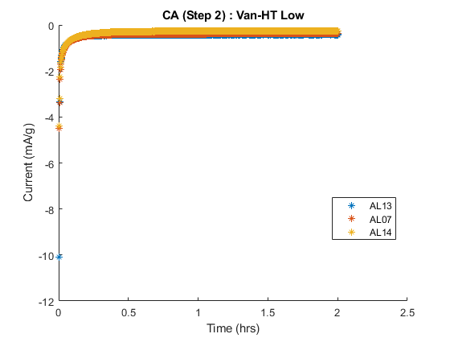
Charge Efficiency at Final Scan Rate for Every Replicate
Charge Efficiency at Final Scan Rate Replicate 1 (AH) of Formula Van-HT High (Control) at 0.50 mV/s: 64.376661% Replicate 2 (AH) of Formula Van-HT High (Control) at 0.50 mV/s: 63.762919% Replicate 3 (AH) of Formula Van-HT High (Control) at 0.50 mV/s: 66.847369% Replicate 1 (AL) of Formula Van-HT Low at 0.50 mV/s: 73.506498% Replicate 2 (AL) of Formula Van-HT Low at 0.50 mV/s: 72.687485% Replicate 3 (AL) of Formula Van-HT Low at 0.50 mV/s: 72.463999% Replicate 1 (BH) of Formula Van-A High at 0.50 mV/s: 61.167037% Replicate 2 (BH) of Formula Van-A High at 0.50 mV/s: 61.795034% Replicate 3 (BH) of Formula Van-A High at 0.50 mV/s: 56.854985% Replicate 1 (BL) of Formula Van-A Low at 0.50 mV/s: 70.515691% Replicate 2 (BL) of Formula Van-A Low at 0.50 mV/s: 72.102031% Replicate 3 (BL) of Formula Van-A Low at 0.50 mV/s: 71.033197% Replicate 1 (CH) of Formula Van-DCA High at 0.50 mV/s: 59.000590% Replicate 2 (CH) of Formula Van-DCA High at 0.50 mV/s: 68.421735% Replicate 3 (CH) of Formula Van-DCA High at 0.50 mV/s: 69.320484% Replicate 1 (CL) of Formula Van-DCA Low at 0.50 mV/s: 67.664209% Replicate 2 (CL) of Formula Van-DCA Low at 0.50 mV/s: 68.867580% Replicate 3 (CL) of Formula Van-DCA Low at 0.50 mV/s: 69.405990% Replicate 1 (DH) of Formula Van-A + Indulin High at 0.50 mV/s: 58.576581% Replicate 2 (DH) of Formula Van-A + Indulin High at 0.50 mV/s: 58.196724% Replicate 3 (DH) of Formula Van-A + Indulin High at 0.50 mV/s: 62.415923% Replicate 1 (DL) of Formula Van-A + Indulin Low at 0.50 mV/s: 69.946255% Replicate 2 (DL) of Formula Van-A + Indulin Low at 0.50 mV/s: 69.487015% Replicate 3 (DL) of Formula Van-A + Indulin Low at 0.50 mV/s: 70.650728% Replicate 1 (EH) of Formula S-Drill CL High at 0.50 mV/s: 68.821671% Replicate 2 (EH) of Formula S-Drill CL High at 0.50 mV/s: 62.859429% Replicate 3 (EH) of Formula S-Drill CL High at 0.50 mV/s: 62.935385% Replicate 1 (EL) of Formula S-Drill CL Low at 0.50 mV/s: 68.128718% Replicate 2 (EL) of Formula S-Drill CL Low at 0.50 mV/s: 71.829944% Replicate 3 (EL) of Formula S-Drill CL Low at 0.50 mV/s: 71.127723% Replicate 1 (FH) of Formula Indulin AT High at 0.50 mV/s: 54.403416% Replicate 2 (FH) of Formula Indulin AT High at 0.50 mV/s: 50.981853% Replicate 3 (FH) of Formula Indulin AT High at 0.50 mV/s: 57.508536% Replicate 1 (FL) of Formula Indulin AT Low at 0.50 mV/s: 72.790737% Replicate 2 (FL) of Formula Indulin AT Low at 0.50 mV/s: 70.287861% Replicate 3 (FL) of Formula Indulin AT Low at 0.50 mV/s: 68.791549% 64.38 63.76 66.85 73.51 72.69 72.46 61.17 61.80 56.85 70.52 72.10 71.03 59.00 68.42 69.32 67.66 68.87 69.41 58.58 58.20 62.42 69.95 69.49 70.65 68.82 62.86 62.94 68.13 71.83 71.13 54.40 50.98 57.51 72.79 70.29 68.79
Normalized Charge Efficiency
This section of the code will normalize the efficiency.
Average Normalized Charge Efficiency at the Highest Scan Rate
Normalized Charge Efficiency at Every Scan Rate
Normalized Discharge Rate
Store the scan rate values
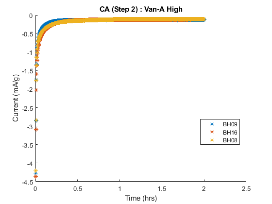Final Discharge Rates for Every Replicate
Final Discharge Rates for Every Replicate Replicate 1 (AH16) of Formula Van-HT High (Control) at 0.5 mV/s: 4.856179 Replicate 2 (AH21) of Formula Van-HT High (Control) at 0.5 mV/s: 4.773968 Replicate 3 (AH07) of Formula Van-HT High (Control) at 0.5 mV/s: 5.883637 Replicate 1 (AL13) of Formula Van-HT Low at 0.5 mV/s: 5.167668 Replicate 2 (AL07) of Formula Van-HT Low at 0.5 mV/s: 5.112220 Replicate 3 (AL14) of Formula Van-HT Low at 0.5 mV/s: 5.168003 Replicate 1 (BH09) of Formula Van-A High at 0.5 mV/s: 4.507695 Replicate 2 (BH16) of Formula Van-A High at 0.5 mV/s: 4.549133 Replicate 3 (BH08) of Formula Van-A High at 0.5 mV/s: 4.182097 Replicate 1 (BL15) of Formula Van-A Low at 0.5 mV/s: 4.896513 Replicate 2 (BL04) of Formula Van-A Low at 0.5 mV/s: 4.744773 Replicate 3 (BL02) of Formula Van-A Low at 0.5 mV/s: 4.788046 Replicate 1 (CH10) of Formula Van-DCA High at 0.5 mV/s: 4.648462 Replicate 2 (CH24) of Formula Van-DCA High at 0.5 mV/s: 4.718340 Replicate 3 (CH22) of Formula Van-DCA High at 0.5 mV/s: 5.488985 Replicate 1 (CL06) of Formula Van-DCA Low at 0.5 mV/s: 5.255575 Replicate 2 (CL02) of Formula Van-DCA Low at 0.5 mV/s: 5.131356 Replicate 3 (CL03) of Formula Van-DCA Low at 0.5 mV/s: 5.086451 Replicate 1 (DH03) of Formula Van-A + Indulin High at 0.5 mV/s: 4.493230 Replicate 2 (DH21) of Formula Van-A + Indulin High at 0.5 mV/s: 4.498083 Replicate 3 (DH13) of Formula Van-A + Indulin High at 0.5 mV/s: 4.808951 Replicate 1 (DL18) of Formula Van-A + Indulin Low at 0.5 mV/s: 5.378516 Replicate 2 (DL03) of Formula Van-A + Indulin Low at 0.5 mV/s: 5.484813 Replicate 3 (DL02) of Formula Van-A + Indulin Low at 0.5 mV/s: 5.300941 Replicate 1 (EH23) of Formula S-Drill CL High at 0.5 mV/s: 5.463314 Replicate 2 (EH03) of Formula S-Drill CL High at 0.5 mV/s: 4.757839 Replicate 3 (EH20) of Formula S-Drill CL High at 0.5 mV/s: 4.804429 Replicate 1 (EL22) of Formula S-Drill CL Low at 0.5 mV/s: 5.094718 Replicate 2 (EL23) of Formula S-Drill CL Low at 0.5 mV/s: 5.295151 Replicate 3 (EL08) of Formula S-Drill CL Low at 0.5 mV/s: 5.264237 Replicate 1 (FH20) of Formula Indulin AT High at 0.5 mV/s: 4.259776 Replicate 2 (FH07) of Formula Indulin AT High at 0.5 mV/s: 3.762435 Replicate 3 (FH16) of Formula Indulin AT High at 0.5 mV/s: 4.545359 Replicate 1 (FL01) of Formula Indulin AT Low at 0.5 mV/s: 5.394036 Replicate 2 (FL25) of Formula Indulin AT Low at 0.5 mV/s: 5.081743 Replicate 3 (FL03) of Formula Indulin AT Low at 0.5 mV/s: 4.891105 4.856179 4.773968 5.883637 5.167668 5.112220 5.168003 4.507695 4.549133 4.182097 4.896513 4.744773 4.788046 4.648462 4.718340 5.488985 5.255575 5.131356 5.086451 4.493230 4.498083 4.808951 5.378516 5.484813 5.300941 5.463314 4.757839 4.804429 5.094718 5.295151 5.264237 4.259776 3.762435 4.545359 5.394036 5.081743 4.891105
Average Normalized Discharge Rate at Square Root of Every Scan Rate
Formula Van-HT High (Control) at square root of scan rate 0.010000 (0.1000): 0.773347 Formula Van-HT High (Control) at square root of scan rate 0.020000 (0.1414): 1.106055 Formula Van-HT High (Control) at square root of scan rate 0.050000 (0.2236): 1.710092 Formula Van-HT High (Control) at square root of scan rate 0.100000 (0.3162): 2.433740 Formula Van-HT High (Control) at square root of scan rate 0.200000 (0.4472): 3.407241 Formula Van-HT High (Control) at square root of scan rate 0.500000 (0.7071): 5.171261 Formula Van-HT Low at square root of scan rate 0.010000 (0.1000): 0.822491 Formula Van-HT Low at square root of scan rate 0.020000 (0.1414): 1.162194 Formula Van-HT Low at square root of scan rate 0.050000 (0.2236): 1.767174 Formula Van-HT Low at square root of scan rate 0.100000 (0.3162): 2.490088 Formula Van-HT Low at square root of scan rate 0.200000 (0.4472): 3.396639 Formula Van-HT Low at square root of scan rate 0.500000 (0.7071): 5.149297 Formula Van-A High at square root of scan rate 0.010000 (0.1000): 0.678549 Formula Van-A High at square root of scan rate 0.020000 (0.1414): 0.879273 Formula Van-A High at square root of scan rate 0.050000 (0.2236): 1.433120 Formula Van-A High at square root of scan rate 0.100000 (0.3162): 2.062319 Formula Van-A High at square root of scan rate 0.200000 (0.4472): 2.900247 Formula Van-A High at square root of scan rate 0.500000 (0.7071): 4.412975 Formula Van-A Low at square root of scan rate 0.010000 (0.1000): 0.769507 Formula Van-A Low at square root of scan rate 0.020000 (0.1414): 1.085255 Formula Van-A Low at square root of scan rate 0.050000 (0.2236): 1.655922 Formula Van-A Low at square root of scan rate 0.100000 (0.3162): 2.329184 Formula Van-A Low at square root of scan rate 0.200000 (0.4472): 3.197984 Formula Van-A Low at square root of scan rate 0.500000 (0.7071): 4.809777 Formula Van-DCA High at square root of scan rate 0.010000 (0.1000): 0.758412 Formula Van-DCA High at square root of scan rate 0.020000 (0.1414): 1.079501 Formula Van-DCA High at square root of scan rate 0.050000 (0.2236): 1.665123 Formula Van-DCA High at square root of scan rate 0.100000 (0.3162): 2.365772 Formula Van-DCA High at square root of scan rate 0.200000 (0.4472): 3.270505 Formula Van-DCA High at square root of scan rate 0.500000 (0.7071): 4.951929 Formula Van-DCA Low at square root of scan rate 0.010000 (0.1000): 0.807996 Formula Van-DCA Low at square root of scan rate 0.020000 (0.1414): 1.127005 Formula Van-DCA Low at square root of scan rate 0.050000 (0.2236): 1.725273 Formula Van-DCA Low at square root of scan rate 0.100000 (0.3162): 2.456994 Formula Van-DCA Low at square root of scan rate 0.200000 (0.4472): 3.413482 Formula Van-DCA Low at square root of scan rate 0.500000 (0.7071): 5.157794 Formula Van-A + Indulin High at square root of scan rate 0.010000 (0.1000): 0.713231 Formula Van-A + Indulin High at square root of scan rate 0.020000 (0.1414): 0.973224 Formula Van-A + Indulin High at square root of scan rate 0.050000 (0.2236): 1.514560 Formula Van-A + Indulin High at square root of scan rate 0.100000 (0.3162): 2.158667 Formula Van-A + Indulin High at square root of scan rate 0.200000 (0.4472): 3.018125 Formula Van-A + Indulin High at square root of scan rate 0.500000 (0.7071): 4.600088 Formula Van-A + Indulin Low at square root of scan rate 0.010000 (0.1000): 0.804036 Formula Van-A + Indulin Low at square root of scan rate 0.020000 (0.1414): 1.148491 Formula Van-A + Indulin Low at square root of scan rate 0.050000 (0.2236): 1.775415 Formula Van-A + Indulin Low at square root of scan rate 0.100000 (0.3162): 2.557512 Formula Van-A + Indulin Low at square root of scan rate 0.200000 (0.4472): 3.536112 Formula Van-A + Indulin Low at square root of scan rate 0.500000 (0.7071): 5.388090 Formula S-Drill CL High at square root of scan rate 0.010000 (0.1000): 0.773926 Formula S-Drill CL High at square root of scan rate 0.020000 (0.1414): 1.057265 Formula S-Drill CL High at square root of scan rate 0.050000 (0.2236): 1.644488 Formula S-Drill CL High at square root of scan rate 0.100000 (0.3162): 2.336441 Formula S-Drill CL High at square root of scan rate 0.200000 (0.4472): 3.268376 Formula S-Drill CL High at square root of scan rate 0.500000 (0.7071): 5.008527 Formula S-Drill CL Low at square root of scan rate 0.010000 (0.1000): 0.810667 Formula S-Drill CL Low at square root of scan rate 0.020000 (0.1414): 1.147182 Formula S-Drill CL Low at square root of scan rate 0.050000 (0.2236): 1.754689 Formula S-Drill CL Low at square root of scan rate 0.100000 (0.3162): 2.477293 Formula S-Drill CL Low at square root of scan rate 0.200000 (0.4472): 3.421753 Formula S-Drill CL Low at square root of scan rate 0.500000 (0.7071): 5.218035 Formula Indulin AT High at square root of scan rate 0.010000 (0.1000): 0.710966 Formula Indulin AT High at square root of scan rate 0.020000 (0.1414): 0.878763 Formula Indulin AT High at square root of scan rate 0.050000 (0.2236): 1.362628 Formula Indulin AT High at square root of scan rate 0.100000 (0.3162): 1.924862 Formula Indulin AT High at square root of scan rate 0.200000 (0.4472): 2.687963 Formula Indulin AT High at square root of scan rate 0.500000 (0.7071): 4.189190 Formula Indulin AT Low at square root of scan rate 0.010000 (0.1000): 0.821474 Formula Indulin AT Low at square root of scan rate 0.020000 (0.1414): 1.152766 Formula Indulin AT Low at square root of scan rate 0.050000 (0.2236): 1.751456 Formula Indulin AT Low at square root of scan rate 0.100000 (0.3162): 2.442195 Formula Indulin AT Low at square root of scan rate 0.200000 (0.4472): 3.375134 Formula Indulin AT Low at square root of scan rate 0.500000 (0.7071): 5.122295
Final Discharge Rates (average)
Discharge rate at 0.5 mV/s of formula Van-HT High (Control): 5.171261 Discharge rate at 0.5 mV/s of formula Van-HT Low: 5.149297 Discharge rate at 0.5 mV/s of formula Van-A High: 4.412975 Discharge rate at 0.5 mV/s of formula Van-A Low: 4.809777 Discharge rate at 0.5 mV/s of formula Van-DCA High: 4.951929 Discharge rate at 0.5 mV/s of formula Van-DCA Low: 5.157794 Discharge rate at 0.5 mV/s of formula Van-A + Indulin High: 4.600088 Discharge rate at 0.5 mV/s of formula Van-A + Indulin Low: 5.388090 Discharge rate at 0.5 mV/s of formula S-Drill CL High: 5.008527 Discharge rate at 0.5 mV/s of formula S-Drill CL Low: 5.218035 Discharge rate at 0.5 mV/s of formula Indulin AT High: 4.189190 Discharge rate at 0.5 mV/s of formula Indulin AT Low: 5.122295 5.171261 5.149297 4.412975 4.809777 4.951929 5.157794 4.600088 5.388090 5.008527 5.218035 4.189190 5.122295
Polarization Analysis
Substract the two peaks (MB_03 - MB_04) for every rep of every formula
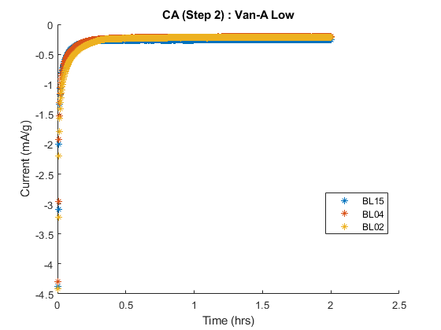Polarization Values at Scan Rate 0.1 mV/s for Every Replicate
Polarization Values at Scan Rate 0.1 mV/s for Every Replicate Replicate 1 (AH16) of Formula Van-HT High (Control) at 0.1 mV/s: 0.209288 Replicate 2 (AH21) of Formula Van-HT High (Control) at 0.1 mV/s: 0.215714 Replicate 3 (AH07) of Formula Van-HT High (Control) at 0.1 mV/s: 0.176959 Replicate 1 (AL13) of Formula Van-HT Low at 0.1 mV/s: 0.175730 Replicate 2 (AL07) of Formula Van-HT Low at 0.1 mV/s: 0.177528 Replicate 3 (AL14) of Formula Van-HT Low at 0.1 mV/s: 0.182923 Replicate 1 (BH09) of Formula Van-A High at 0.1 mV/s: 0.224859 Replicate 2 (BH16) of Formula Van-A High at 0.1 mV/s: 0.239875 Replicate 3 (BH08) of Formula Van-A High at 0.1 mV/s: 0.240178 Replicate 1 (BL15) of Formula Van-A Low at 0.1 mV/s: 0.190341 Replicate 2 (BL04) of Formula Van-A Low at 0.1 mV/s: 0.186063 Replicate 3 (BL02) of Formula Van-A Low at 0.1 mV/s: 0.191066 Replicate 1 (CH10) of Formula Van-DCA High at 0.1 mV/s: 0.225179 Replicate 2 (CH24) of Formula Van-DCA High at 0.1 mV/s: 0.198161 Replicate 3 (CH22) of Formula Van-DCA High at 0.1 mV/s: 0.181688 Replicate 1 (CL06) of Formula Van-DCA Low at 0.1 mV/s: 0.181019 Replicate 2 (CL02) of Formula Van-DCA Low at 0.1 mV/s: 0.184411 Replicate 3 (CL03) of Formula Van-DCA Low at 0.1 mV/s: 0.185961 Replicate 1 (DH03) of Formula Van-A + Indulin High at 0.1 mV/s: 0.263955 Replicate 2 (DH21) of Formula Van-A + Indulin High at 0.1 mV/s: 0.254296 Replicate 3 (DH13) of Formula Van-A + Indulin High at 0.1 mV/s: 0.230773 Replicate 1 (DL18) of Formula Van-A + Indulin Low at 0.1 mV/s: 0.197782 Replicate 2 (DL03) of Formula Van-A + Indulin Low at 0.1 mV/s: 0.187345 Replicate 3 (DL02) of Formula Van-A + Indulin Low at 0.1 mV/s: 0.184021 Replicate 1 (EH23) of Formula S-Drill CL High at 0.1 mV/s: 0.180527 Replicate 2 (EH03) of Formula S-Drill CL High at 0.1 mV/s: 0.196935 Replicate 3 (EH20) of Formula S-Drill CL High at 0.1 mV/s: 0.199607 Replicate 1 (EL22) of Formula S-Drill CL Low at 0.1 mV/s: 0.187788 Replicate 2 (EL23) of Formula S-Drill CL Low at 0.1 mV/s: 0.179512 Replicate 3 (EL08) of Formula S-Drill CL Low at 0.1 mV/s: 0.180733 Replicate 1 (FH20) of Formula Indulin AT High at 0.1 mV/s: 0.251663 Replicate 2 (FH07) of Formula Indulin AT High at 0.1 mV/s: 0.290306 Replicate 3 (FH16) of Formula Indulin AT High at 0.1 mV/s: 0.255445 Replicate 1 (FL01) of Formula Indulin AT Low at 0.1 mV/s: 0.181964 Replicate 2 (FL25) of Formula Indulin AT Low at 0.1 mV/s: 0.182188 Replicate 3 (FL03) of Formula Indulin AT Low at 0.1 mV/s: 0.184670 0.209288 0.215714 0.176959 0.175730 0.177528 0.182923 0.224859 0.239875 0.240178 0.190341 0.186063 0.191066 0.225179 0.198161 0.181688 0.181019 0.184411 0.185961 0.263955 0.254296 0.230773 0.197782 0.187345 0.184021 0.180527 0.196935 0.199607 0.187788 0.179512 0.180733 0.251663 0.290306 0.255445 0.181964 0.182188 0.184670
Polarization values at scan rate 0.1 mV/s (average)
Polarization of formula Van-HT High (Control) at scan rate 0.1: 0.200653 Polarization of formula Van-HT Low at scan rate 0.1: 0.178727 Polarization of formula Van-A High at scan rate 0.1: 0.234971 Polarization of formula Van-A Low at scan rate 0.1: 0.189157 Polarization of formula Van-DCA High at scan rate 0.1: 0.201676 Polarization of formula Van-DCA Low at scan rate 0.1: 0.183797 Polarization of formula Van-A + Indulin High at scan rate 0.1: 0.249675 Polarization of formula Van-A + Indulin Low at scan rate 0.1: 0.189716 Polarization of formula S-Drill CL High at scan rate 0.1: 0.192357 Polarization of formula S-Drill CL Low at scan rate 0.1: 0.182678 Polarization of formula Indulin AT High at scan rate 0.1: 0.265805 Polarization of formula Indulin AT Low at scan rate 0.1: 0.182941 0.200653 0.178727 0.234971 0.189157 0.201676 0.183797 0.249675 0.189716 0.192357 0.182678 0.265805 0.182941
Overlay Charge Plots
Initialize xVar, yVar, bCharMass
Warning: Ignoring extra legend entries. Warning: Ignoring extra legend entries. Warning: Ignoring extra legend entries. Warning: Ignoring extra legend entries. Warning: Ignoring extra legend entries. Warning: Ignoring extra legend entries. Warning: Ignoring extra legend entries. Warning: Ignoring extra legend entries. Warning: Ignoring extra legend entries. Warning: Ignoring extra legend entries. Warning: Ignoring extra legend entries. Warning: Ignoring extra legend entries.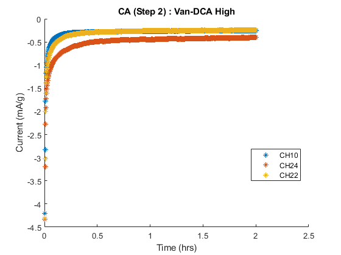 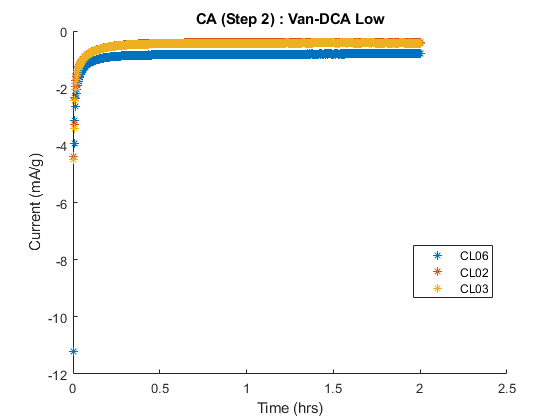 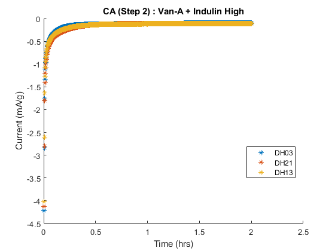 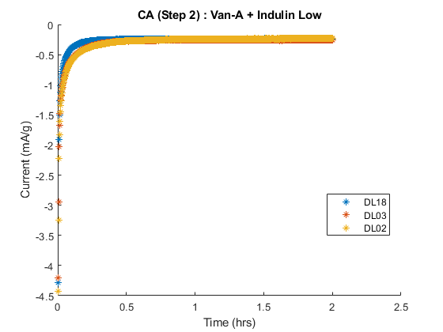 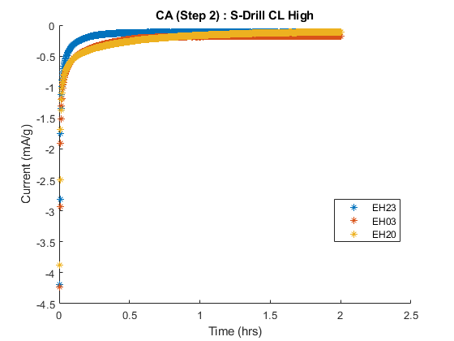 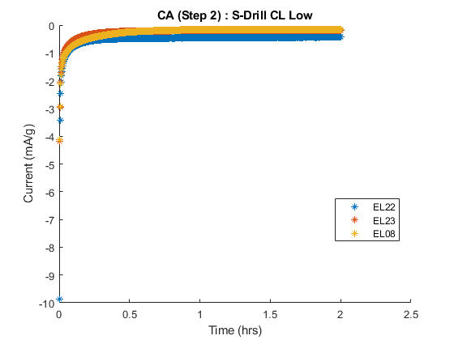 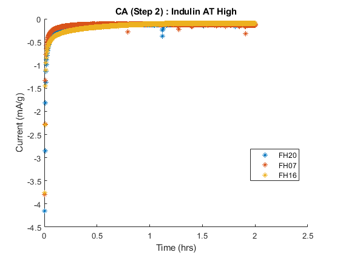 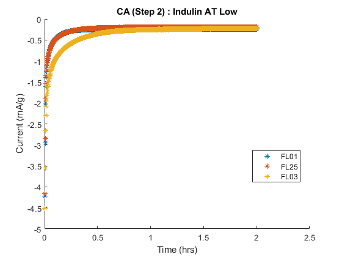 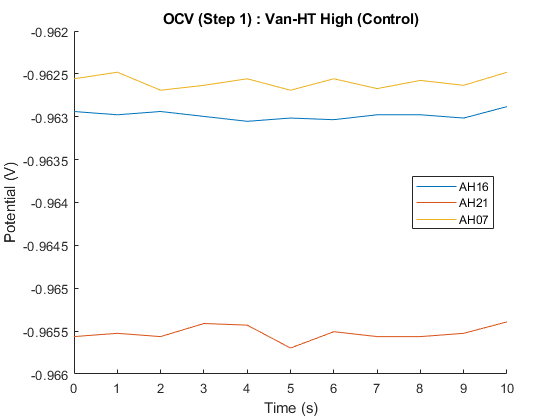 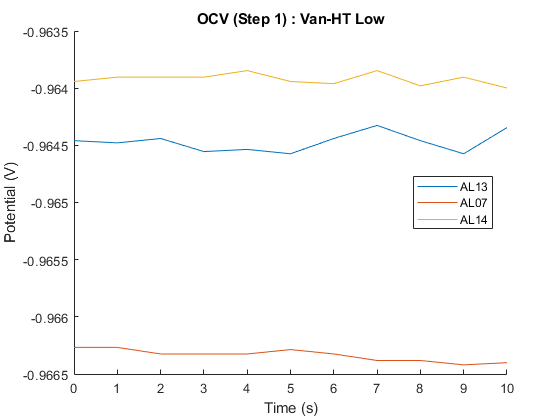 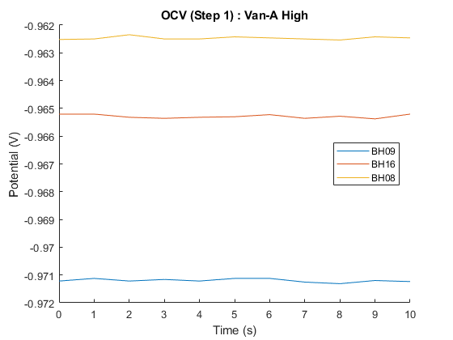 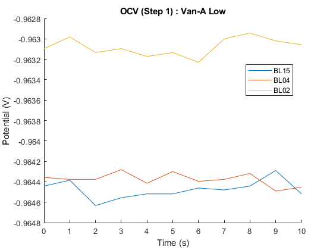
2. CA
Define x and y variables
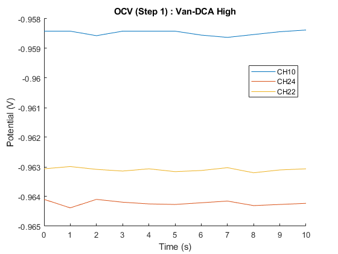 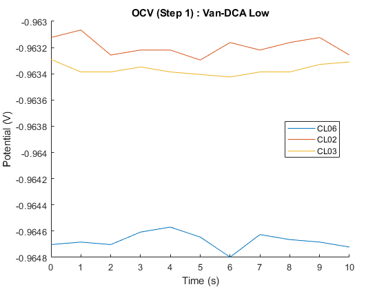 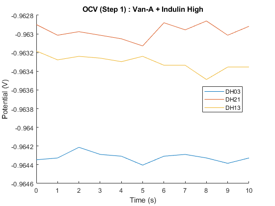 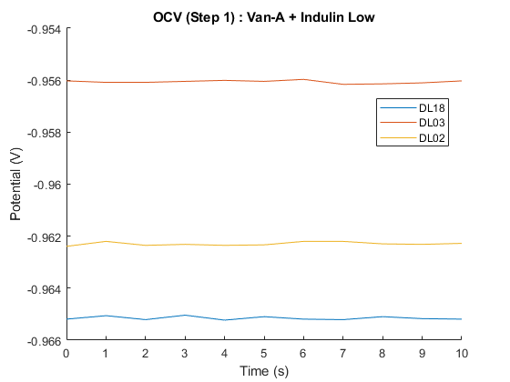 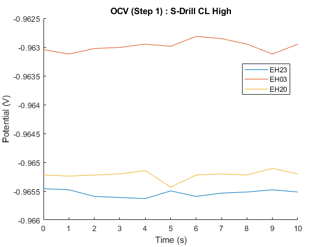 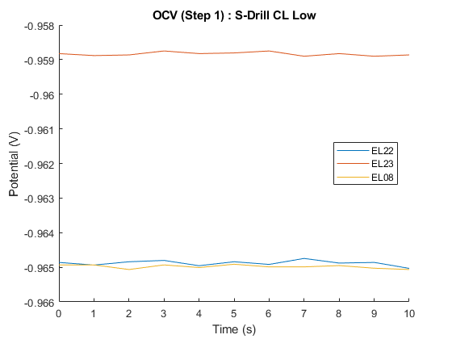 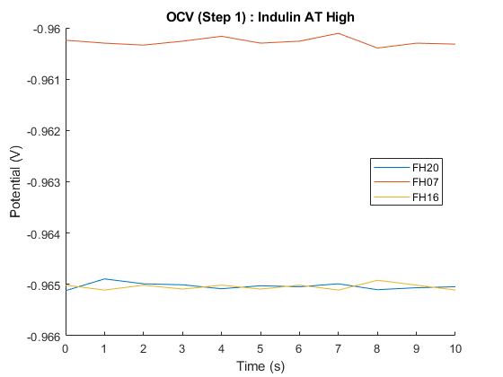 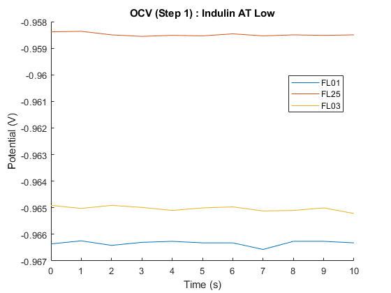 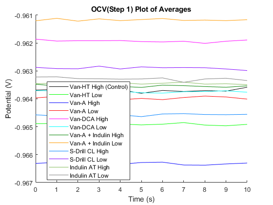OCV Plots
Run general replicate
OCV Average Plot
Plot averages